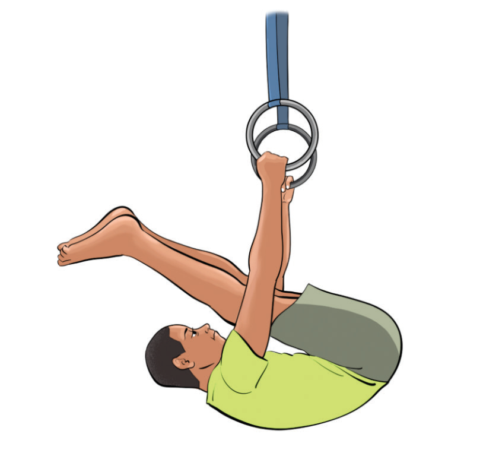

Activity 4.28
Search from internet and other sources on how to execute a flexed long hang and practice it repeatedly until you master the skill.
Pike hang
A pike hang is a hanging position on a bar where the gymnast keeps their legs straight and lifted in a pike position, Figure 4.32. This skill helps develop core strength, flexibility, and body control for more advanced bar movements. The following steps will help you practice a pike hang:
(i)
Grip the bar using an overhand grip or an underhand grip keeping hands shoulder-width apart;
(ii)
Keep your shoulders active and tighten your abs and hip flexors;
(iii)
Keep your legs straight and together, toes pointing while lifting them to hip height, creating an “L” shape with your body; and
(iv)
Hold the pike hang for at least 5-10 seconds at first and aim to increase it.

Activity 4.29
Use the internet or other available resources to find information on how to perform an extended pike hang. Look for step-by-step instructions, safety tips, and demonstrations. Then practice it
SPORTS STUDIES FORM TWO.indd 138
9/17/25 9:54 AM